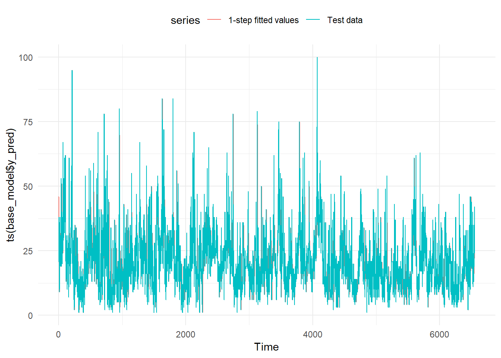
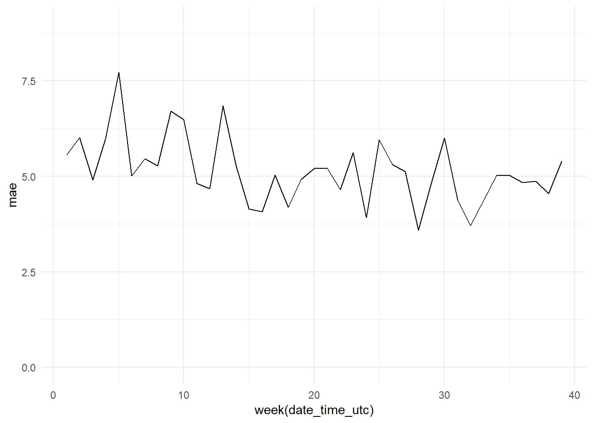
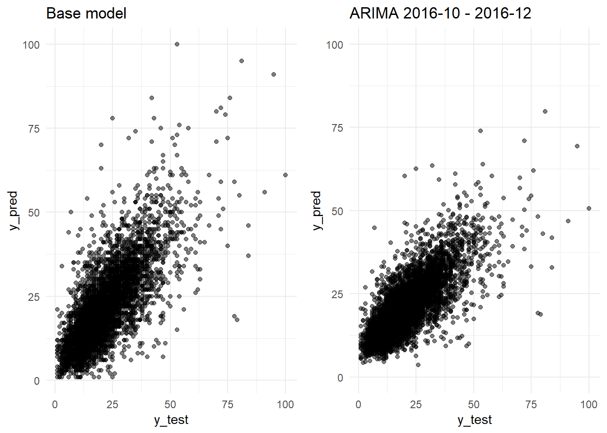
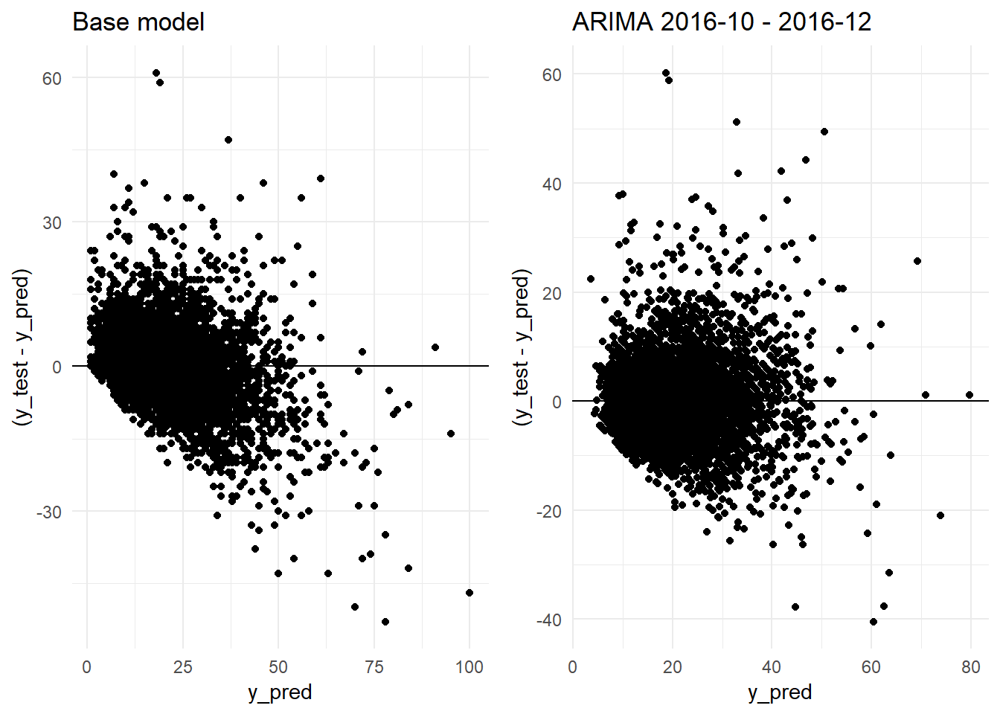
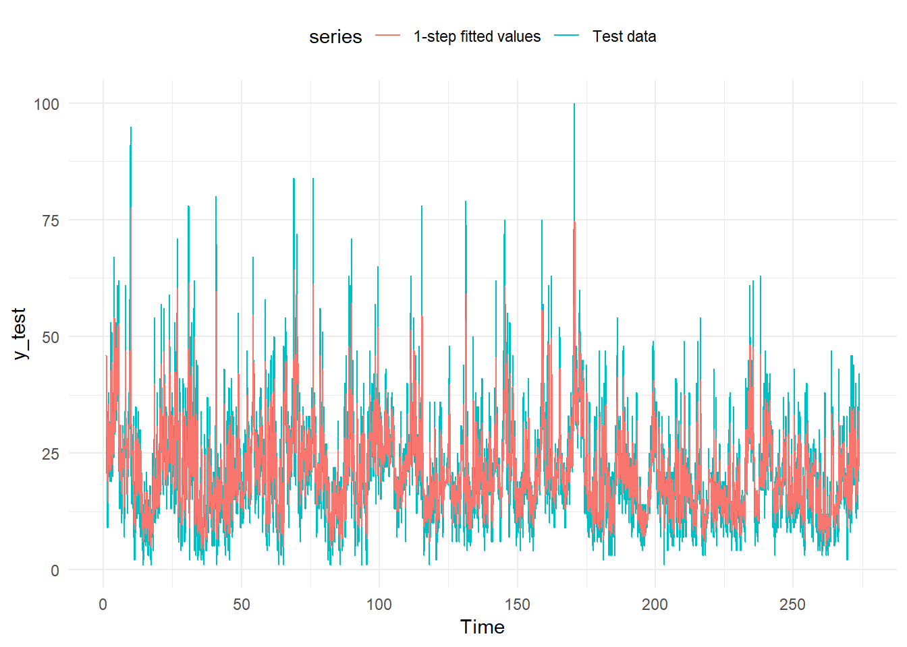
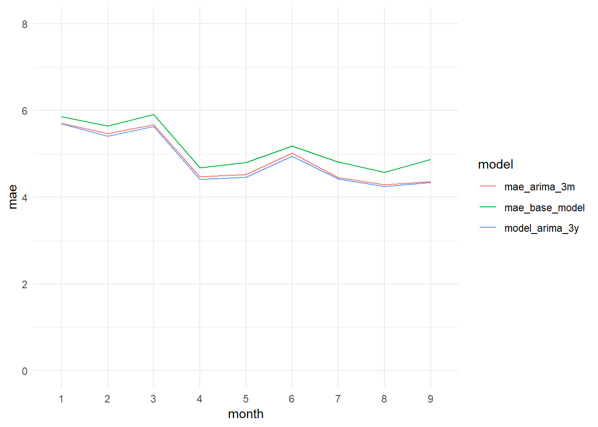

8 Forecasting models. ARIMA
In this notebook we are going to use ARIMA models to forecast hourly levels of the PM10 pollutant.
We are going to focus on the Constitucion station, which is the only station we have meteorological data. We are not going to use the meteorological data in the ARIMA models, but we will use them later with machine learning models.
Loading packages
library(readr)
library(dplyr)
library(tidyr)
library(purrr)
library(lubridate)
library(ggplot2)
library(stringr)
library(knitr)
library(xts)
library(zoo)
library(gridExtra)
library(astsa)
library(rvest)
library(fpp2)
library(ranger)
library(broom)
library(RcppRoll)
library(caret)8.1 Data loading
air_data_2 <- readRDS("data_rds/air_data_2.rds")
constitucion_data <- air_data_2 %>% filter(station == "1")8.2 Train, test and validation data (PM10 models)
We have 18 years of avalaible data. But we are not going to use all the data. We are going to test three different periods for the training of the models, 2009-01-01 - 2016-12-31, 2014-01-01 - 2016-12-31 and 2016-10-01 - 2016-12-31. We will use the 2017-01-01 - 2017-09-30 period for testing and the 2017-10-01 - 2017-12-31 one for validation.
train_201401_201612 <- constitucion_data %>% filter(date_time_utc >= '2014-01-01 00:00:00',
date_time_utc <= '2016-12-31 23:00:00') %>%
select(PM10) %>%
mutate(PM10 = replace_na(PM10, mean(PM10, na.rm = TRUE))) %>% # replacing NAs by the mean.
rename(PM10_0 = PM10) %>%
ts(frequency = 24)
# We generate a smaller training dataset with the last three months of 2016
train_201610_201612 <- constitucion_data %>% filter(date_time_utc >= '2016-10-01 00:00:00',
date_time_utc <= '2016-12-31 23:00:00') %>%
select(PM10) %>%
mutate(PM10 = replace_na(PM10, mean(PM10, na.rm = TRUE))) %>%
rename(PM10_0 = PM10) %>%
ts(frequency = 24)
# We generate a bigger training dataset with 9 years (2009-2017)
train_200901_201612 <- constitucion_data %>% filter(date_time_utc >= '2009-01-01 00:00:00',
date_time_utc <= '2016-12-31 23:00:00') %>%
select(PM10) %>%
mutate(PM10 = replace_na(PM10, mean(PM10, na.rm = TRUE))) %>%
rename(PM10_0 = PM10) %>%
ts(frequency = 24)
# We generate the test dataset
test_201701_201709 <- constitucion_data %>% filter(date_time_utc >= '2017-01-01 00:00:00',
date_time_utc <= '2017-09-30 23:00:00') %>%
select(PM10) %>%
mutate(PM10 = replace_na(PM10, mean(PM10, na.rm = TRUE))) %>%
rename(PM10_0 = PM10) %>%
ts(frequency = 24)
# We generate a smaller testing dataset with the first two weeks of 2017 (for visualization purposes)
test_20170101_20170114 <- constitucion_data %>% filter(date_time_utc >= '2017-01-01 00:00:00',
date_time_utc <= '2017-01-14 23:00:00') %>%
select(PM10) %>%
mutate(PM10 = replace_na(PM10, mean(PM10, na.rm = TRUE))) %>%
rename(PM10_0 = PM10) %>%
ts(frequency = 24)
# And the validation period
validation_201710_201712 <- constitucion_data %>% filter(date_time_utc >= '2017-10-01 00:00:00',
date_time_utc <= '2017-12-31 23:00:00') %>%
select(PM10) %>%
mutate(PM10 = replace_na(PM10, mean(PM10, na.rm = TRUE))) %>%
rename(PM10_0 = PM10) %>%
ts(frequency = 24)8.3 Data Exploration
The reason we are not using data before 2009 is because, in general, as we could see in the Data Exploration part, the levels of the pollutants, their variability, and even their trends and patterns are very different from now.
We recover this PM10 evolution graph as example.
PM10_day_avg <- constitucion_data %>%
select(date_time_utc, PM10) %>%
group_by(day = date(date_time_utc)) %>%
summarise(day_avg = mean(PM10, na.rm = TRUE))
ggplot(PM10_day_avg, aes(x = day, y = day_avg, , colour = day_avg)) +
geom_point(alpha = 0.5) +
geom_smooth(color = "grey", alpha = 0.2) +
scale_colour_gradientn(colours = terrain.colors(10)) +
theme(legend.position = c(0.3, 0.9),
legend.background = element_rect(colour = "transparent", fill = NA), legend.direction = "horizontal") +
labs(colour = "PM10 daily average (colour scale)", x = "Year", y = "PM10 daily average", title = "PM10 daily average - 2000-2017 evolution (Constitucion station)")
We obtain the main descriptive statistics of each period
sum_train_2009_2016 <- as.data.frame(train_200901_201612) %>%
summarise(min. = min(PM10_0),
q25 = quantile(PM10_0, 0.25),
avg = round(mean(PM10_0), 2),
median = median(PM10_0),
max. = max(PM10_0),
q75 = quantile(PM10_0, 0.75),
sd = round(sd(PM10_0), 2)) %>%
mutate(period = "2009-01-2016-12")
sum_train_2014_2016 <- as.data.frame(train_201401_201612) %>%
summarise(min. = min(PM10_0),
q25 = quantile(PM10_0, 0.25),
avg = round(mean(PM10_0), 2),
median = median(PM10_0),
max. = max(PM10_0),
q75 = quantile(PM10_0, 0.75),
sd = round(sd(PM10_0), 2)) %>%
mutate(period = "2014-01-2016-12")
sum_train_201610_201612 <- as.data.frame(train_201610_201612) %>%
summarise(min. = min(PM10_0),
q25 = quantile(PM10_0, 0.25),
avg = round(mean(PM10_0), 2),
median = median(PM10_0),
max. = max(PM10_0),
q75 = quantile(PM10_0, 0.75),
sd = round(sd(PM10_0), 2)) %>%
mutate(period = "2016-10-2016-12")
sum_test_201701_201709 <- as.data.frame(test_201701_201709) %>%
summarise(min. = min(PM10_0),
q25 = quantile(PM10_0, 0.25),
avg = round(mean(PM10_0), 2),
median = median(PM10_0),
max. = max(PM10_0),
q75 = quantile(PM10_0, 0.75),
sd = round(sd(PM10_0), 2)) %>%
mutate(period = "2017-01-2017-09")
sum_validation_201710_201712 <- as.data.frame(validation_201710_201712) %>%
summarise(min. = min(PM10_0),
q25 = quantile(PM10_0, 0.25),
avg = round(mean(PM10_0), 2),
median = median(PM10_0),
max. = max(PM10_0),
q75 = quantile(PM10_0, 0.75),
sd = round(sd(PM10_0), 2)) %>%
mutate(period = "2017-10-2017-12")
periods_summary <- bind_rows(sum_train_2009_2016, sum_train_2014_2016, sum_train_201610_201612, sum_test_201701_201709, sum_validation_201710_201712) %>%
select(period, everything()) # I move the "period" column to the first position
periods_summary## period min. q25 avg median max. q75 sd
## 1 2009-01-2016-12 0 16 25.92 23 888 32 17.01
## 2 2014-01-2016-12 0 15 24.73 22 422 30 14.83
## 3 2016-10-2016-12 0 11 20.10 18 189 26 13.06
## 4 2017-01-2017-09 1 13 20.66 19 100 26 10.90
## 5 2017-10-2017-12 1 13 20.79 17 172 25 13.358.4 Base model.
In order to create a base model we are going to take as prediction the value from the previous hour, forecasting just one hour ahead.
# As we don't need any training, because we have already defined the model as Xt = Xt-1, we only need to create a testing dataset. We use the period defined before (2017-01-01 - 2017-09-30) but without the time series format (ts).
test_201701_201709_2 <- constitucion_data %>% filter(date_time_utc >= '2017-01-01 00:00:00',
date_time_utc < '2017-10-01 00:00:00') %>%
select(PM10, date_time_utc) %>%
mutate(PM10 = replace_na(PM10, mean(PM10, na.rm = TRUE))) # We replace the nas (36) by the mean.
base_model <- test_201701_201709_2 %>% mutate(y_pred = lag(PM10, 1)) %>% # We create the column y_pred with the lagged value of PM10 (one hour).
rename(y_test = PM10) %>% # We change the name of the PM10 column to y_test
na.omit() # We remove the observations with nas (just the first row)
# We extract the y_test and y_pred datasets
y_test <- base_model$y_test
y_pred <- base_model$y_pred
# And we obtain some statistics scores to measure the goodness of the model
# Root mean square error
RMSE <- RMSE(y_test, y_pred)
# Mean absolute error
MAE <- MAE(y_test, y_pred)
# R-squared
rss <- sum((y_test - y_pred) ** 2)
tss <- sum((y_test - mean(y_test)) ** 2)
R_squared <- 1 - rss/tss
paste(c("R-squared:", round(R_squared, 4), "MAE:", round(MAE, 2), "RMSE:", round(RMSE, 2)))## [1] "R-squared:" "0.5327" "MAE:" "5.15" "RMSE:"
## [6] "7.45"So, for the one hour ahead PM10 prediction if we take as prediction the previous PM10 hour level we would have a R-squared of 0.5327. So, the model is explaining 53% of the variability of the target variable.
Estimation of errors. We are going to use the MAE (Mean Absolute Error) in order to compare the different models. We choose the MAE over the RMSE (Root Mean Square Error) because it is easier to interpret and at the same time it is more robust (less sensitive to outliers). Either way, we are going to calculate the RMSE too, precisely because its sensitivity to outliers. It will give us useful information about the behaviour of each model.
We plot two lines with the predictions and the actual values. We have a problem of overplotting.
test_201701_201709_2 ## # A tibble: 6,551 x 2
## PM10 date_time_utc
## <dbl> <dttm>
## 1 46 2016-12-31 23:00:00
## 2 20.7 2017-01-01 00:00:00
## 3 38 2017-01-01 01:00:00
## 4 35 2017-01-01 02:00:00
## 5 36 2017-01-01 03:00:00
## 6 31 2017-01-01 04:00:00
## 7 22 2017-01-01 05:00:00
## 8 32 2017-01-01 06:00:00
## 9 21 2017-01-01 07:00:00
## 10 20 2017-01-01 08:00:00
## # ... with 6,541 more rowsautoplot(ts(base_model$y_pred), series="1-step fitted values") +
autolayer(ts(base_model$y_test),
series="Test data") +
theme_minimal() +
theme(legend.position="top")
To avoid the overplotting we plot just the first 14 days of 2017.
two_weeks <- base_model %>% slice(1:336) # 336 corresponds to 24 hours * 14 days.
two_weeks_base_model_graph <- autoplot(ts(two_weeks$y_pred), series="1-step fitted values") +
autolayer(ts(two_weeks$y_test),
series="Test data") +
theme_minimal() +
theme(legend.position="top")
two_weeks_base_model_graph
And as expected, we get two identical lines. But one of them, the prediction, one step forward than the line with the actual data.
We plot in a graph the actual versus the predicted values
df <- bind_cols(as.data.frame(y_pred), as.data.frame(y_test))
y_pred_y_test_base_model_graph <- ggplot(data = df, aes(x = y_test, y = y_pred)) +
geom_point(alpha = 0.5) +
theme_minimal()We create another graph with the distribution of the residuals
residual_distribution_base_model_graph <- ggplot(data = df, aes(x = y_pred, y = (y_test - y_pred))) +
geom_point() +
geom_hline(yintercept=0) +
geom_point(alpha = 0.5) +
theme_minimal()And a histogram with the distribution of the errors
residual_histogram_base_model_graph <- ggplot(data = df, aes(x = y_test - y_pred)) +
geom_histogram() +
theme_minimal()And the evolution of the residuals during the test period
date_time <- constitucion_data %>% select(date_time_utc) %>%
filter(date_time_utc > '2017-01-01 00:00:00',
date_time_utc <= '2017-09-30 23:00:00')
y_pred <- as.data.frame(y_pred)
y_test <- as.data.frame(y_test)
residuals_dates <- bind_cols(date_time, y_pred, y_test) %>%
mutate(residuals = y_test - y_pred) %>%
select(date_time_utc, residuals)
residuals_date_time_base_model_graph <- ggplot(data = residuals_dates,
aes(x = date_time_utc, y = residuals))+
geom_line() +
theme_minimal()
residuals_date_time_base_model_graph It seems at first sight there is not much variation in the residuals along time. But
It seems at first sight there is not much variation in the residuals along time. But
daily_mae <- bind_cols(date_time, y_pred, y_test) %>%
group_by(date(date_time_utc)) %>%
mutate(mae = MAE(y_pred, y_test)) %>%
select(date_time_utc, mae)
daily_mae_base_model_graph <- ggplot(data = daily_mae,
aes(x = date(date_time_utc), y = mae))+
geom_line() +
theme_minimal() +
ylim(0, 9)
daily_mae_base_model_graph
Monthly mae evolution
weekly_mae <- bind_cols(date_time, y_pred, y_test) %>%
group_by(week(date_time_utc)) %>%
mutate(mae = MAE(y_pred, y_test)) %>%
select(date_time_utc, mae)
weekly_mae_base_model_graph <- ggplot(data = weekly_mae,
aes(x = week(date_time_utc), y = mae))+
geom_line() +
theme_minimal() +
ylim(0, 9)
weekly_mae_base_model_graph
monthly_mae_base_model <- bind_cols(date_time, y_pred, y_test) %>%
group_by(month(date_time_utc)) %>%
mutate(mae = MAE(y_pred, y_test)) %>%
select(date_time_utc, mae)
monthly_mae_base_model_graph <- ggplot(data = monthly_mae_base_model,
aes(x = month(date_time_utc), y = mae))+
geom_line() +
theme_minimal() +
ylim(0, 8)
monthly_mae_base_model_graphAnd we arrange the four plots in one grid
grid.arrange(y_pred_y_test_base_model_graph,
residual_distribution_base_model_graph,
residual_histogram_base_model_graph,
monthly_mae_base_model_graph,
ncol = 2)8.5 PM10 ARIMA models
To fit our first ARIMA model we are going to use the auto.arima function from the Forecast package. This function fits several ARIMA models, with different parameters, and selects the model with the best performance. To do this the function auto.arima uses some approximations to speed up the search of the best model. More info about the algorithm applied here.
We set the parameter seasonal=TRUE because we want the function looks for seasonal elements (24 hours).
We are going to save all the models fitted as rds objects in the “data_rds” folder of the project.
8.5.1 PM10_model_arima_3m
We generate our first ARIMA model using the three months training period 2016-10-01 - 2016-12-31
# PM10_model_arima_3m = auto.arima(train_201610_201612,seasonal=TRUE,trace=TRUE) #
# saveRDS(PM10_model_arima_3m, "data_rds/PM10_model_arima_3m.rds")PM10_model_arima_3m <- readRDS("data_rds/PM10_model_arima_3m.rds")
summary(PM10_model_arima_3m)## Series: train_201610_201612
## ARIMA(2,1,4)(0,0,2)[24]
##
## Coefficients:
## ar1 ar2 ma1 ma2 ma3 ma4 sma1 sma2
## 0.1006 0.547 -0.5222 -0.6079 0.1543 -0.0107 0.0977 0.1135
## s.e. NaN NaN NaN NaN NaN 0.0184 0.0222 0.0215
##
## sigma^2 estimated as 71.56: log likelihood=-7844.97
## AIC=15707.94 AICc=15708.02 BIC=15759.24
##
## Training set error measures:
## ME RMSE MAE MPE MAPE MASE ACF1
## Training set 0.1536203 8.442183 5.17907 -Inf Inf 0.545021 -0.0004040565We obtain the R-squared
y_train <- forecast(PM10_model_arima_3m, h = 1)$fitted # We make a forecast one hour ahead and we extract the fitted values from the object forecast.
x_train <- train_201610_201612
rss <- sum((y_train - x_train) ** 2)
tss <- sum((x_train - mean(x_train)) ** 2)
R_squared <- 1 - rss/tss
paste(c("R-squared:", round(R_squared, 4)))## [1] "R-squared:" "0.5816"The R-squared has increased from 0.5327 to 0.5816. But both, RMSE (8.44) and MAE (5.17) (ARIMA summary output), are greater than the scores obtained with the Base Model (although the MAE is very similar). But we are comparing two different periods, the testing period (Base Model; 2017-01 - 2017-09) versus the training period (ARIMA model; 2016-10 - 2016-12).
To make a fair comparison we will have to compare the same periods.
For this we are going to apply the ARIMA model PM10_model_arima_3m on the testing data. Doing so we will be able to get the fitted values from this period and we will be able to obtain its error scores.
We apply the model to the testing data
y_pred <- forecast(test_201701_201709, model = PM10_model_arima_3m, h=1)$fitted # We call the forecast function passing the testing data through the ARIMA model fitted with the training data and we extract the fitted values.
y_test <- test_201701_201709
sd_test <- sd(y_test)
RMSE <- RMSE(y_test, y_pred)
MAE <- MAE(y_test, y_pred)
rss <- sum((y_test - y_pred) ** 2)
tss <- sum((y_test - mean(y_test)) ** 2)
R_squared <- 1 - rss/tss
paste(c("R-squared:", round(R_squared, 4), "MAE:", round(MAE, 2), "RMSE:", round(RMSE, 2), "Standard Deviation (test data):", round(sd_test, 2)))## [1] "R-squared:" "0.5975"
## [3] "MAE:" "4.88"
## [5] "RMSE:" "6.92"
## [7] "Standard Deviation (test data):" "10.9"We confirm that we are obtaining a better R-squared: 0.5975 versus the 0.5327 obtained by the Base Model. The errors are sustantially better too. The ARIMA model obtains a MAE of 4.88 (Base Model: 5.15) and a RMSE of 6.92 (Base Model: 7.45).
We plot in a graph the actual versus the predicted values
y_pred <- as.data.frame(y_pred) %>% rename(y_pred = x)
y_test <- as.data.frame(y_test) %>% rename(y_test = PM10_0)
df <- bind_cols(y_pred, y_test)
y_pred_y_test_arima_3m_graph <- ggplot(data = df, aes(x = y_test, y = y_pred)) +
geom_point(alpha = 0.5) +
ylim(0, 100) +
theme_minimal()
residual_distribution_arima_3m_graph <- ggplot(data = df, aes(x = y_pred, y = (y_test - y_pred))) +
geom_point() +
geom_hline(yintercept=0) +
geom_point(alpha = 0.5) +
theme_minimal()
residual_histogram_arima_3m_graph <- ggplot(data = df, aes(x = y_test - y_pred)) +
geom_histogram() +
theme_minimal()
date_time <- constitucion_data %>% select(date_time_utc) %>%
filter(date_time_utc > '2017-01-01 00:00:00',
date_time_utc <= '2017-10-01 00:00:00')
monthly_mae_3m <- bind_cols(date_time, y_pred, y_test) %>%
group_by(month(date_time_utc)) %>%
mutate(mae = MAE(y_pred, y_test)) %>%
select(date_time_utc, mae)
monthly_mae_arima_3m_graph <- ggplot(data = monthly_mae_3m,
aes(x = month(date_time_utc), y = mae))+
geom_line() +
theme_minimal() +
ylim(0, 8)
monthly_mae_arima_3m_graphgrid.arrange(y_pred_y_test_arima_3m_graph,
residual_distribution_arima_3m_graph,
residual_histogram_arima_3m_graph,
monthly_mae_arima_3m_graph,
ncol = 2)
grid.arrange(y_pred_y_test_base_model_graph + ggtitle("Base model"),
y_pred_y_test_arima_3m_graph + ggtitle("ARIMA 2016-10 - 2016-12"),
ncol=2)
grid.arrange(residual_distribution_base_model_graph + ggtitle("Base model"),
residual_distribution_arima_3m_graph + ggtitle("ARIMA 2016-10 - 2016-12"),
ncol=2)
monthly_mae_3m_2 <- monthly_mae_3m %>%
select('month(date_time_utc)',
mae) %>%
unique()
monthly_mae_base_model_2 <- monthly_mae_base_model %>%
select('month(date_time_utc)',
mae) %>%
unique()
monthly_mae_comparison <- left_join(monthly_mae_base_model_2,
monthly_mae_3m_2,
by = 'month(date_time_utc)') %>%
rename(month = 'month(date_time_utc)',
mae_base_model = mae.x,
mae_arima_3m = mae.y)
monthly_mae_comparison$month <- as.factor(monthly_mae_comparison$month)
monthly_mae_comparison_long <- monthly_mae_comparison %>% gather(model, mae, 2:3)
monthly_mae_base_model_vs_arima3m_graph <- ggplot(data = monthly_mae_comparison_long,
aes(x = month, y = mae, col = model, group = model)) + geom_line() +
theme_minimal() +
ylim(0, 8)
monthly_mae_base_model_vs_arima3m_graph 8.5.2 PM10_model_arima_3y
We are going to see if we manage to improve the results of the ARIMA model using a longer period of training, the 2014-01-01 - 2016-12-31 period.
# PM10_model_arima_3y = auto.arima(train_201401_201612,seasonal=TRUE,trace=TRUE)
# saveRDS(PM10_model_arima_3y, "data_rds/PM10_model_arima_3y.rds")
PM10_model_arima_3y <- readRDS("data_rds/PM10_model_arima_3y.rds")
summary(PM10_model_arima_3y)## Series: train_201401_201612
## ARIMA(2,1,3)(0,0,2)[24]
##
## Coefficients:
## ar1 ar2 ma1 ma2 ma3 sma1 sma2
## 0.0991 0.5519 -0.5228 -0.6175 0.1642 0.0564 0.0392
## s.e. NaN NaN NaN NaN NaN 0.0063 0.0061
##
## sigma^2 estimated as 87.28: log likelihood=-96095.71
## AIC=192207.4 AICc=192207.4 BIC=192272.8
##
## Training set error measures:
## ME RMSE MAE MPE MAPE MASE ACF1
## Training set 0.003353175 9.341125 5.774614 -Inf Inf 0.5111664 0.002213004The model selected by the auto.arima function is very similar to the three months of training model.
Pending: explicar las diferencias.
train_201610_201612: ARIMA(2,1,4)(0,0,2)[24] train_201401_201612: ARIMA(2,1,3)(0,0,2)[24]
Coefficients “train_201610_201612”: ar1 ar2 ma1 ma2 ma3 ma4 sma1 sma2 0.1006 0.547 -0.5222 -0.6079 0.1543 -0.0107 0.0977 0.1135
Coefficients “train_201401_201612”: ar1 ar2 ma1 ma2 ma3 sma1 sma2 0.0991 0.5519 -0.5228 -0.6175 0.1642 0.0564 0.0392
We apply the model to the test data and we obtain the accuracy scores.
y_pred <- forecast(test_201701_201709, model = PM10_model_arima_3y, h=1)$fitted # We call the forecast function passing the testing data through the ARIMA model fitted with the training data and we extract the fitted values.
y_test <- test_201701_201709
sd_test <- sd(y_test)
RMSE <- RMSE(y_test, y_pred)
MAE <- MAE(y_test, y_pred)
rss <- sum((y_test - y_pred) ** 2)
tss <- sum((y_test - mean(y_test)) ** 2)
R_squared <- 1 - rss/tss
paste(c("R-squared:", round(R_squared, 4), "MAE:", round(MAE, 2), "RMSE:", round(RMSE, 2), "Standard Deviation (test data):", round(sd_test, 2)))## [1] "R-squared:" "0.6015"
## [3] "MAE:" "4.84"
## [5] "RMSE:" "6.88"
## [7] "Standard Deviation (test data):" "10.9"The model improves a little its results, but not very much. We get a MAE of 4.84, just 0.04 less than the three months model. And the R-squared grows until 0.6015, an increment of 0.0040.
We plot the fitted values and the test data.
autoplot(y_test, series="Test data") +
autolayer(y_pred,
series="1-step fitted values") +
theme_minimal() +
theme(legend.position="top")
We plot in a graph the actual versus the predicted values
y_pred <- as.data.frame(y_pred) %>% rename(y_pred = x)
y_test <- as.data.frame(y_test) %>% rename(y_test = PM10_0)
df <- bind_cols(y_pred, y_test)
y_pred_y_test_arima_3y_graph <- ggplot(data = df, aes(x = y_test, y = y_pred)) +
geom_point(alpha = 0.5) +
ylim(0, 100) +
theme_minimal()
residual_distribution_arima_3y_graph <- ggplot(data = df, aes(x = y_pred, y = (y_test - y_pred))) +
geom_point() +
geom_hline(yintercept=0) +
geom_point(alpha = 0.5) +
theme_minimal()
residual_histogram_arima_3y_graph <- ggplot(data = df, aes(x = y_test - y_pred)) +
geom_histogram() +
theme_minimal()
date_time <- constitucion_data %>% select(date_time_utc) %>%
filter(date_time_utc > '2017-01-01 00:00:00',
date_time_utc <= '2017-10-01 00:00:00')
monthly_mae_3y <- bind_cols(date_time, y_pred, y_test) %>%
group_by(month(date_time_utc)) %>%
mutate(mae = MAE(y_pred, y_test)) %>%
select(date_time_utc, mae)
monthly_mae_arima_3y_graph <- ggplot(data = monthly_mae_3y,
aes(x = month(date_time_utc), y = mae))+
geom_line() +
theme_minimal() +
ylim(0, 8)
grid.arrange(y_pred_y_test_arima_3y_graph,
residual_distribution_arima_3y_graph,
residual_histogram_arima_3y_graph,
monthly_mae_arima_3y_graph,
ncol = 2)grid.arrange(y_pred_y_test_base_model_graph + ggtitle("Base model"),
y_pred_y_test_arima_3m_graph + ggtitle("ARIMA 2016-10 - 2016-12"),
y_pred_y_test_arima_3y_graph + ggtitle("ARIMA 2014-01 - 2016-12"),
ncol=2)grid.arrange(residual_distribution_base_model_graph + ggtitle("Base model"),
residual_distribution_arima_3m_graph + ggtitle("ARIMA 2016-10 - 2016-12"),
residual_distribution_arima_3y_graph+ ggtitle("ARIMA 2014-01 - 2016-12"),
ncol=2)monthly_mae_3y_2 <- monthly_mae_3y %>%
select('month(date_time_utc)',
mae) %>%
unique() %>%
rename(month = 'month(date_time_utc)',
model_arima_3y = mae) %>%
ungroup() %>%
mutate(month = as.factor(month))
monthly_mae_comparison <- left_join(monthly_mae_comparison,
monthly_mae_3y_2,
by = 'month')
monthly_mae_comparison_long <- monthly_mae_comparison %>% gather(model, mae, 2:4)
monthly_mae_base_model_vs_arima3m_3y_graph <- ggplot(data = monthly_mae_comparison_long,
aes(x = month, y = mae, col = model, group = model)) + geom_line() +
theme_minimal() +
ylim(0, 8)
monthly_mae_base_model_vs_arima3m_3y_graph 
8.5.3 PM10_model_arima_9y
Finally, we are going to try to improve the result taking as training period 9 years of data: From 2009-01-01 to 2016-12-31.
# PM10_model_arima_9y = auto.arima(train_200901_201612,seasonal=TRUE,trace=TRUE)
#saveRDS(PM10_model_arima_9y, "data_rds/PM10_model_arima_9y.rds")
#summary(PM10_model_arima_9y)PM10_model_arima_9y <- readRDS("data_rds/PM10_model_arima_9y.rds")
summary(PM10_model_arima_9y)## Series: train_200901_201612
## ARIMA(3,1,2)(0,0,2)[24]
##
## Coefficients:
## ar1 ar2 ar3 ma1 ma2 sma1 sma2
## 0.0878 0.3272 0.1539 -0.4929 -0.4748 0.0572 0.0330
## s.e. 0.0266 0.0161 0.0042 0.0269 0.0257 0.0039 0.0037
##
## sigma^2 estimated as 126.3: log likelihood=-269164.4
## AIC=538344.8 AICc=538344.8 BIC=538418.1
##
## Training set error measures:
## ME RMSE MAE MPE MAPE MASE
## Training set -4.331726e-05 11.23784 6.325201 -Inf Inf 0.5096805
## ACF1
## Training set -0.0003654974y_pred <- forecast(test_201701_201709, model = PM10_model_arima_9y, h=1)$fitted # We call the forecast function passing the testing data through the ARIMA model fitted with the training data and we extract the fitted values.
y_test <- test_201701_201709
sd_test <- sd(y_test)
RMSE <- RMSE(y_test, y_pred)
MAE <- MAE(y_test, y_pred)
rss <- sum((y_test - y_pred) ** 2)
tss <- sum((y_test - mean(y_test)) ** 2)
R_squared <- 1 - rss/tss
paste(c("R-squared:", round(R_squared, 4), "MAE:", round(MAE, 2), "RMSE:", round(RMSE, 2), "Standard Deviation (test data):", round(sd_test, 2)))## [1] "R-squared:" "0.5966"
## [3] "MAE:" "4.88"
## [5] "RMSE:" "6.93"
## [7] "Standard Deviation (test data):" "10.9"The model, with 6 more years of data doesn’t change too much. But it worsens slightly its results. The MAE increases in 0.04 points and the R-squared decreases in 0.0049 points.
y_pred <- as.data.frame(y_pred) %>% rename(y_pred = x)
y_test <- as.data.frame(y_test) %>% rename(y_test = PM10_0)
df <- bind_cols(y_pred, y_test)
y_pred_y_test_arima_9y_graph <- ggplot(data = df, aes(x = y_test, y = y_pred)) +
geom_point(alpha = 0.5) +
ylim(0, 100) +
theme_minimal()
residual_distribution_arima_9y_graph <- ggplot(data = df, aes(x = y_pred, y = (y_test - y_pred))) +
geom_point() +
geom_hline(yintercept=0) +
geom_point(alpha = 0.5) +
theme_minimal()
residual_histogram_arima_9y_graph <- ggplot(data = df, aes(x = y_test - y_pred)) +
geom_histogram() +
theme_minimal()
date_time <- constitucion_data %>% select(date_time_utc) %>%
filter(date_time_utc > '2017-01-01 00:00:00',
date_time_utc <= '2017-10-01 00:00:00')
monthly_mae_9y <- bind_cols(date_time, y_pred, y_test) %>%
group_by(month(date_time_utc)) %>%
mutate(mae = MAE(y_pred, y_test)) %>%
select(date_time_utc, mae)
monthly_mae_arima_9y_graph <- ggplot(data = monthly_mae_9y,
aes(x = month(date_time_utc), y = mae))+
geom_line() +
theme_minimal() +
ylim(0, 8)
grid.arrange(y_pred_y_test_arima_9y_graph,
residual_distribution_arima_9y_graph,
residual_histogram_arima_9y_graph,
monthly_mae_arima_9y_graph,
ncol = 2)df <- bind_cols(as.data.frame(y_pred), as.data.frame(y_test))
y_pred_y_test_arima_9y_graph <- ggplot(data = df, aes(x = y_test, y = y_pred)) +
geom_point(alpha = 0.5) +
ylim(0, 100) +
theme_minimal()
grid.arrange(y_pred_y_test_base_model_graph + ggtitle("Base model"),
y_pred_y_test_arima_3m_graph + ggtitle("ARIMA 2016-10 - 2016-12"),
y_pred_y_test_arima_3y_graph + ggtitle("ARIMA 2014-01 - 2016-12"),
y_pred_y_test_arima_9y_graph + ggtitle("ARIMA 2009-01 - 2016-12"),
ncol=2)residual_distribution_arima_9y_graph <- ggplot(data = df, aes(x = y_pred, y = (y_test - y_pred))) +
geom_point() +
geom_hline(yintercept=0) +
geom_point(alpha = 0.5) +
theme_minimal()
grid.arrange(residual_distribution_base_model_graph + ggtitle("Base model"),
residual_distribution_arima_3m_graph + ggtitle("ARIMA 2016-10 - 2016-12"),
residual_distribution_arima_3y_graph+ ggtitle("ARIMA 2014-01 - 2016-12"),
residual_distribution_arima_9y_graph+ ggtitle("ARIMA 2009-01 - 2016-12"),
ncol=2)monthly_mae_9y_2 <- monthly_mae_9y %>%
select('month(date_time_utc)',
mae) %>%
unique() %>%
rename(month = 'month(date_time_utc)',
model_arima_9y = mae) %>%
ungroup() %>%
mutate(month = as.factor(month))
monthly_mae_comparison <- left_join(monthly_mae_comparison,
monthly_mae_9y_2,
by = 'month')
monthly_mae_comparison_long <- monthly_mae_comparison %>% gather(model, mae, 2:5)
monthly_mae_base_model_vs_arima3m_3y_9y_graph <- ggplot(data = monthly_mae_comparison_long,
aes(x = month, y = mae, col = model, group = model)) + geom_line() +
theme_minimal() +
ylim(0, 8)
monthly_mae_base_model_vs_arima3m_3y_9y_graph ggsave("imgs/monthly_mae_base_model_vs_arima3m_3y_9y_graph.png")
ggsave("imgs/monthly_mae_base_model_vs_arima3m_3y_9y_graph.jpg")8.5.4 PM10 h = 6
So far, we made forecasts for one hour ahead and we estimated their precission. But what happens when we try to forecast more distant values?
We use the model with better results. The PM10_model_arima_3y model (train: 2014-01-01 - 2016-12-31).
PM10_model_arima_3y <- readRDS("data_rds/PM10_model_arima_3y.rds")
# We create the object arima.test with the Arima function
arima.test <- Arima(test_201701_201709, model=PM10_model_arima_3y)And with the fitted function, setting its parameter to 6, we fit and extract the fitted values corresponding to the forecast 6 hours ahead.
# PM10_h6 <- fitted(arima.test, h = 6) # It takes a lot of time
# saveRDS(PM10_h6, "data_rds/PM10_arima_model_3y_test_fitted_values_h6.rds") # We save the final object as a rds filefitted_values_h6 <- readRDS("data_rds/PM10_arima_model_3y_test_fitted_values_h6.rds")We assign to y_test and y_pred the test dataset and its predictions.
y_test <- test_201701_201709
y_pred <- fitted_values_h6The first rows of y_pred are NAs. That is because we are making prediction 6 hours ahead.
head(y_pred, 10)## Time Series:
## Start = c(1, 1)
## End = c(1, 10)
## Frequency = 24
## x
## [1,] NA
## [2,] NA
## [3,] NA
## [4,] NA
## [5,] NA
## [6,] NA
## [7,] NA
## [8,] 31.67340
## [9,] 36.69984
## [10,] 36.44485So, we remove the NAs from the y_pred time series, and the equivalent rows from the y_test object.
y_pred <- y_pred %>% na.omit()
y_test <- y_test %>% subset(start = 8)And we obtain the scores to know the goodness of the model of 6 hours ahead
RMSE <- RMSE(y_test, y_pred)
MAE <- MAE(y_test, y_pred)
rss <- sum((y_test - y_pred) ** 2)
tss <- sum((y_test - mean(y_test)) ** 2)
R_squared <- 1 - rss/tss
paste(c("R-squared:", round(R_squared, 4), "MAE:", round(MAE, 2), "RMSE:", round(RMSE, 2), "Standard Deviation (test data):", round(sd_test, 2)))## [1] "R-squared:" "0.2118"
## [3] "MAE:" "7.12"
## [5] "RMSE:" "9.68"
## [7] "Standard Deviation (test data):" "10.9"R-squared: 0.2118. When we try to predict the levels of PM10 6 hours ahead this Arima model is only able to explain a 21% of the variability. And consequentely the errors grow too.
y_pred <- as.data.frame(y_pred) %>% rename(y_pred = x)
y_test <- as.data.frame(y_test) %>% rename(y_test = x)
df <- bind_cols(y_pred, y_test)
y_pred_y_test_arima_h6_graph <- ggplot(data = df, aes(x = y_test, y = y_pred)) +
geom_point(alpha = 0.5) +
ylim(0, 100) +
theme_minimal()
residual_distribution_arima_h6_graph <- ggplot(data = df, aes(x = y_pred, y = (y_test - y_pred))) +
geom_point() +
geom_hline(yintercept=0) +
geom_point(alpha = 0.5) +
theme_minimal()
residual_histogram_arima_h6_graph <- ggplot(data = df, aes(x = y_test - y_pred)) +
geom_histogram() +
theme_minimal()
date_time <- constitucion_data %>% select(date_time_utc) %>%
filter(date_time_utc > '2017-01-01 00:00:00',
date_time_utc <= '2017-10-01 00:00:00') %>%
slice(8:n())
monthly_mae_h6 <- bind_cols(date_time, df)
monthly_mae_h6$y_pred <- as.numeric(monthly_mae_h6$y_pred)
monthly_mae_h6$y_test <- as.numeric(monthly_mae_h6$y_test)
monthly_mae_h6 <- monthly_mae_h6 %>%
group_by(month(date_time_utc)) %>%
mutate(mae = MAE(y_pred, y_test)) %>%
select(date_time_utc, mae)
monthly_mae_arima_h6_graph <- ggplot(data = monthly_mae_h6,
aes(x = month(date_time_utc), y = mae))+
geom_line() +
theme_minimal() +
ylim(0, 10)
grid.arrange(y_pred_y_test_arima_h6_graph,
residual_distribution_arima_h6_graph,
residual_histogram_arima_h6_graph,
monthly_mae_arima_h6_graph,
ncol = 2)8.5.5 PM10 h = 12
# PM10_h12 <- fitted(arima.test, h = 12) # It takes a lot of time
# saveRDS(PM10_h12, "data_rds/PM10_arima_model_3y_test_fitted_values_h12.rds") # We save the final object as a rds filefitted_values_h12 <- readRDS("data_rds/PM10_arima_model_3y_test_fitted_values_h12.rds")
# We assign to y_test and y_pred the test dataset and its predictions.
y_test <- test_201701_201709
y_pred <- fitted_values_h12
# So, we remove the NAs from the y_pred time series, and the equivalent rows from the y_test object.
y_pred <- y_pred %>% na.omit()
y_test <- y_test %>% subset(start = 14)
# And we obtain the scores to know the goodness of the model of 6 hours ahead
RMSE <- RMSE(y_test, y_pred)
MAE <- MAE(y_test, y_pred)
rss <- sum((y_test - y_pred) ** 2)
tss <- sum((y_test - mean(y_test)) ** 2)
R_squared <- 1 - rss/tss
paste(c("R-squared:", round(R_squared, 4), "MAE:", round(MAE, 2), "RMSE:", round(RMSE, 2), "Standard Deviation (test data):", round(sd_test, 2)))## [1] "R-squared:" "0.1108"
## [3] "MAE:" "7.64"
## [5] "RMSE:" "10.28"
## [7] "Standard Deviation (test data):" "10.9"y_pred <- as.data.frame(y_pred) %>% rename(y_pred = x)
y_test <- as.data.frame(y_test) %>% rename(y_test = x)
df <- bind_cols(y_pred, y_test)
y_pred_y_test_arima_h12_graph <- ggplot(data = df, aes(x = y_test, y = y_pred)) +
geom_point(alpha = 0.5) +
ylim(0, 100) +
theme_minimal()
residual_distribution_arima_h12_graph <- ggplot(data = df, aes(x = y_pred, y = (y_test - y_pred))) +
geom_point() +
geom_hline(yintercept=0) +
geom_point(alpha = 0.5) +
theme_minimal()
residual_histogram_arima_h12_graph <- ggplot(data = df, aes(x = y_test - y_pred)) +
geom_histogram() +
theme_minimal()
date_time <- constitucion_data %>% select(date_time_utc) %>%
filter(date_time_utc > '2017-01-01 00:00:00',
date_time_utc <= '2017-10-01 00:00:00') %>%
slice(14:n())
monthly_mae_h12 <- bind_cols(date_time, y_pred, y_test)
monthly_mae_h12$y_pred <- as.numeric(monthly_mae_h12$y_pred)
monthly_mae_h12$y_test <- as.numeric(monthly_mae_h12$y_test)
monthly_mae_h12 <- monthly_mae_h12 %>%
group_by(month(date_time_utc)) %>%
mutate(mae = MAE(y_pred, y_test)) %>%
select(date_time_utc, mae)
monthly_mae_arima_h12_graph <- ggplot(data = monthly_mae_h12,
aes(x = month(date_time_utc), y = mae))+
geom_line() +
theme_minimal() +
ylim(0, 12)
grid.arrange(y_pred_y_test_arima_h12_graph,
residual_distribution_arima_h12_graph,
residual_histogram_arima_h12_graph,
monthly_mae_arima_h12_graph,
ncol = 2)
8.5.6 PM10 h = 24
# PM10_h24 <- fitted(arima.test, h = 24) # It takes a lot of time
# saveRDS(PM10_h24, "data_rds/PM10_arima_model_3y_test_fitted_values_h24.rds") # We save the final object as a rds filefitted_values_h24 <- readRDS("data_rds/PM10_arima_model_3y_test_fitted_values_h24.rds")
# We assign to y_test and y_pred the test dataset and its predictions.
y_test <- test_201701_201709
y_pred <- fitted_values_h24
# So, we remove the NAs from the y_pred time series, and the equivalent rows from the y_test object.
y_pred <- y_pred %>% na.omit()
y_test <- y_test %>% subset(start = 26)
# And we obtain the scores to know the goodness of the model of 6 hours ahead
RMSE <- RMSE(y_test, y_pred)
MAE <- MAE(y_test, y_pred)
rss <- sum((y_test - y_pred) ** 2)
tss <- sum((y_test - mean(y_test)) ** 2)
R_squared <- 1 - rss/tss
paste(c("R-squared:", round(R_squared, 4), "MAE:", round(MAE, 2), "RMSE:", round(RMSE, 2), "Standard Deviation (test data):", round(sd_test, 2)))## [1] "R-squared:" "0.0138"
## [3] "MAE:" "8.12"
## [5] "RMSE:" "10.83"
## [7] "Standard Deviation (test data):" "10.9"y_pred <- as.data.frame(y_pred) %>% rename(y_pred = x)
y_test <- as.data.frame(y_test) %>% rename(y_test = x)
df <- bind_cols(y_pred, y_test)
y_pred_y_test_arima_h24_graph <- ggplot(data = df, aes(x = y_test, y = y_pred)) +
geom_point(alpha = 0.5) +
ylim(0, 100) +
theme_minimal()
residual_distribution_arima_h24_graph <- ggplot(data = df, aes(x = y_pred, y = (y_test - y_pred))) +
geom_point() +
geom_hline(yintercept=0) +
geom_point(alpha = 0.5) +
theme_minimal()
residual_histogram_arima_h24_graph <- ggplot(data = df, aes(x = y_test - y_pred)) +
geom_histogram() +
theme_minimal()
date_time <- constitucion_data %>% select(date_time_utc) %>%
filter(date_time_utc > '2017-01-01 00:00:00',
date_time_utc <= '2017-10-01 00:00:00') %>%
slice(26:n())
monthly_mae_h24 <- bind_cols(date_time, y_pred, y_test)
monthly_mae_h24$y_pred <- as.numeric(monthly_mae_h24$y_pred)
monthly_mae_h24$y_test <- as.numeric(monthly_mae_h24$y_test)
monthly_mae_h24 <- monthly_mae_h24 %>%
group_by(month(date_time_utc)) %>%
mutate(mae = MAE(y_pred, y_test)) %>%
select(date_time_utc, mae)
monthly_mae_arima_h24_graph <- ggplot(data = monthly_mae_h24,
aes(x = month(date_time_utc), y = mae))+
geom_line() +
theme_minimal() +
ylim(0, 15)
grid.arrange(y_pred_y_test_arima_h24_graph,
residual_distribution_arima_h24_graph,
residual_histogram_arima_h24_graph,
monthly_mae_arima_h24_graph,
ncol = 2)
PM10_ARIMA_results <- read_csv("data_final_csvs/PM10_ARIMA_results.csv")
PM10_ARIMA_results_table <- kable(
PM10_ARIMA_results, booktabs = TRUE,
caption = 'ARIMA models results for the PM10 pollutant'
)
PM10_ARIMA_results_table| Model type | Target variable | Prediction horizon | Train period | Test period | R-Squared | MAE | Model detail |
|---|---|---|---|---|---|---|---|
| Auto regressive (Base model) | PM10 | 1 hour |
|
201701-201709 | 0.5327 | 5.15 | PM10t = PM10(t-1) |
| ARIMA | PM10 | 1 hour | 201610-201612 | 201701-201709 | 0.5975 | 4.88 | ARIMA(2,1,4)(0,0,2)[24] |
| ARIMA | PM10 | 1 hour | 201401-201612 | 201701-201709 | 0.6015 | 4.84 | ARIMA(2,1,3)(0,0,2)[24] |
| ARIMA | PM10 | 1 hour | 200901_201612 | 201701-201709 | 0.5966 | 4.88 | ARIMA(3,1,2)(0,0,2)[24] |
| ARIMA | PM10 | 6 hours | 201401-201612 | 201701-201709 | 0.2118 | 7.12 | ARIMA(2,1,3)(0,0,2)[24] |
| ARIMA | PM10 | 12 hours | 201401-201612 | 201701-201709 | 0.1108 | 7.64 | ARIMA(2,1,3)(0,0,2)[24] |
| ARIMA | PM10 | 24 hours | 201401-201612 | 201701-201709 | 0.0138 | 10.90 | ARIMA(2,1,3)(0,0,2)[24] |